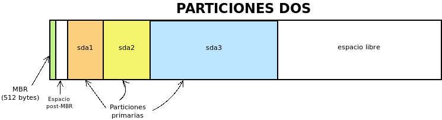
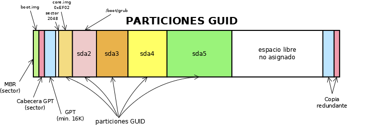

5.1.2. Particiones¶
Hay dos sistemas principales de particionado:
- El particionado DOS basado en el MBR.
- El particionado GPT introducido por la especificación UEFI.
Un firmware UEFI exige este segundo particionado, mientras que con BIOS es posible usar ambos.
| Suite | Ejecutable | Soporte | Interfaz | |
|---|---|---|---|---|
| DOS | GPT | |||
| fdisk | fdisk | Sí | Sí | Interactiva con menús. |
| sfdisk | Sí | Sí | Desasistida. | |
| cfdisk | Sí | Sí | Interactiva con ncurses. | |
| gdisk | gdisk | Sí | Sí | Interactiva con menús. |
| sgdisk | Sí | Sí | Desasistida. | |
| cgdisk | Sí | Sí | Interactiva con ncurses. | |
| parted | parted | Sí | Sí | Interactiva, desasistida. |
| gparted | Sí | Sí | Gráfica. | |
El epígrafe desarrolla una descripción de:
- El particionado DOS.
- El particionado GPT, si el arranque es BIOS.
- El particionado GPT, si el arranque es UEFI.
5.1.2.1. DOS¶
Antes de pasar propiamente a describir el particionado DOS es conveniente entender cómo actúa el BIOS al comenzar el proceso de carga del disco duro.
5.1.2.1.1. El BIOS y el MBR¶
El BIOS se limita en cargar el código que encuentre en el MBR, por lo que en el caso de este arranque el punto de carga es único para cada disco. En principio, por tanto, sólo es posible arrancar un único sistema operativo del disco.
Para salvar esta limitación es indispensable utilizar un cargador de arranque como LILO, NTLDR. GRUB o Windows Boot Manager, que es el programa cargado a través del firware de la placa base, que se encarga de dar acceso al arranque de los distintos sistemas operativos instalados. Adicionalmente puede servir para cargar un mismo sistema operativo con distintos parámetros de arranque (p.e. un modo normal y un modo de pruebas) o aplicaciones para labores muy específicas que no requieren sistema operativo como memtest86+ o HDT (Hardware Detection Tool).
Como lo habitual es que el sistema disponga de varios dispositivos de almacenamiento (sean de estado sólido, magnéticos u ópticos), además de poderse definir la secuencia con la que se comprueba si el MBR de cada disco contiene un código de arranque, también es posible escoger durante cada arranque cuál es el dispositivo que se quiere arrancar en esa ocasión[1].
El MBR es el primer sector del disco y contiene lo siguiente:

- Los primeros 446 bytes contiene el código de arranque que carga el BIOS.
- Los 64 bytes siguientes sirven para definir la tabla de particiones del disco.
- los dos últimos bytes son una marca de arranque que contiene siempre
55AA.
5.1.2.1.2. Descripción¶
En el particionado DOS, la tabla de particiones se define en los 64 bytes del MBR.
La tabla de particiones define cuáles son las particiones del disco y requiere 16 bytes para cada uno, lo cual implica que, en principio, sólo sea posible definir cuatro particiones. La información para cada partición es la siguiente:
| Tamaño (bytes) | Descripción |
|---|---|
| 1 | Marca de activa (0x80 es el valor para indicar que es activa). |
| 3 | Cilindro, Cabezal, Sector de comienzo. |
| 1 | Tipo de partición (informa de su contenido). |
| 3 | Cilindro, Cabezal, Sector de final. |
| 4 | Direccionamiento de bloque lógico[2] de su sector de arranque. |
| 4 | Longitud de la partición en sectores. |
A estos datos se pueden hacer algunas aclaraciones y apostillas:
- Sólo puede haber una partición marcada como activa. El resto deberán tener todas ese byte a 0.
- Se pueden identificar 256 tipos de sistemas de ficheros distintos.
Como para el direccionamiento se usan 4 bytes (32 bits) y cada sector es de 512 bytes, esto determina cuál es el tamaño máximo del disco si se usa este particionado:
\[2^{32}*512 \mathit{B} = 2*2^{40} \mathit{B} =2 \mathit{TB}\]El tamaño máximo de una partición, por la misma razón, coincide con el tamaño máximo de disco.
Nota
A la partición cuya información se recoge en la tabla de particiones se la denomina partición primaria.
5.1.2.1.3. Arranque¶
El BIOS de la placa base ejecuta el código del MBR que, en principio, debería, simplemente, remitir al sector de arranque (VBR) de la partición marcada como activa. Ahí ya se encontrará el código específico para lograr arrancar el sistema operativo.
En cambio, algunos gestores de arranque, como LILO o GRUB, incluyen en el MBR el código necesario para continuar cargando más código, ya que los 446 bytes son escasos, y no atienden a cuál sea la partición marcada como activa.
GRUB, en particular, divide su ejecución en tres fases:
- La primera que comprende la ejecución del código incluido en el MBR.
- La segunda que comprende la ejecución del código almacenado en el espacio libre que queda entre el MBR y el comienzo de la primera partición.
- La tercera que comprende la ejecución del resto del código que se encuentra
dentro del directorio
/boot/grubdel Linux que haya instalado GRUB en disco.
5.1.2.1.4. Tipos de particiones¶
5.1.2.1.4.1. Particiones primarias¶
Si consideramos todo lo expuesto hasta ahora y que, por ejemplo, se hayan definido tres particiones en la tabla de particiones del MBR, esquemáticamente podríamos representar el estado de las particiones así:
En principio, aún podría definirse una cuarta partición que debería ocupar todo el espacio libre, porque de no hacerlo, el que quedara fuera no sería aprovechable al no poderse definir más particiones.
Nota
Para nombrar las particiones se ha usado la nomenclatura de Linux
sda por fingir que nos encontramos ante el primer disco y un número
correlativo para cada partición.
Advertencia
En sistemas antiguos, la primera partición empezaba al comienzo del segundo cabezal[3], o sea, en el sector 63, por lo que el espacio entre ésta y el MBR era de 62 sectores. Ese espacio es insuficiente para almacenar el código de la segunda fase de GRUB. Las herramientas modernas suelen hacer que el tamaño de las particiones sea múltiplo de 2048 sectores, esto es, 1MiB, por lo que la primera partición empieza en el sector 2048. Este artículo de 2011 afirma que basta con que las particiones estén alineadas en múltiplos de 4KiB. La página de manual de sgdisk, por su parte, sostiene que la alineación en múltiplos de 1MiB es necesaria para optimizar el rendimiento de la tecnología Advanced Format de Western Digital, de algunos RAIDs y de los dispositivos SSD.
5.1.2.1.4.2. Particiones lógicas¶
Dos son las limitaciones fundamentales del particionado DOS:
- El tamaño máximo de 2TiB para discos y de particiones que es insalvable, aunque sólo ha empezado a cobrar importancia en fechas recientes.
- La limitación de sólo poder crear cuatro particiones.
Para paliar esta segunda limitación, Microsoft se inventó el concepto de partición extendida, como una partición primaria destinada no a contener un sistema de ficheros, sino más particiones: en teoría, un número ilimitado. Toda partición contenida dentro de una partición extendida se denomina partición lógica. En cada disco sólo puede haber una partición primaria marcada como partición extendida.

En este caso, hay definidas tres particiones primarias (sda1, sda2 y sda3), la última de las cuales está marcada como extendida. En consecuencia, dentro de ella pueden definirse particiones lógicas (sda5, sda6, sda7). En el espacio sin asignar de la extendida se podrán aún definir una cantidad ilimitado de particiones lógicas; y en el espacio libre fuera de ella una única partición primaria más (la sda4).
Aunque irrelevantes a efectos prácticos, la partición extendida se implementa del siguiente modo:
- La partición primaria que hará de partición extendida se marca como de tipo 0x05.
- El primer sector de la partición extendida (su VBR) se denomina EBR y
tiene la misma estructura que un MBR. En su tabla de particiones se incluyen
dos entradas:
- La primera entrada refiere la descripción de la partición lógica contigua (la primera).
- La segunda entrada refiere el sector en el que empieza el segundo EBR, que se situará a continuación de la primera partición lógica.
- Las dos restantes entradas no se usan.
- El segundo EBR es como el primero, pero describiendo la segunda partición lógica y el comienzo del tercer EBR y así sucesivamente. En caso de que no existan más particiones lógicas la segunda entrada estará a 0.

En resumen:
- Una tabla de particiones DOS es sólo capaz de registrar hasta cuatro particiones primarias.
- La definición de todas las particiones primarias se encuentra en el MBR.
- Una de las particiones primarias puede marcarse como extendida, lo cual la habilita para contener dentro de ella un número ilimitado de particiones lógicas.
- La definición de las particiones lógicas se encuentra distribuida a lo largo de la partición extendida que las contiene.
5.1.2.1.5. Limitaciones¶
Concentremos juntas las limitaciones de este sistema de particionado:
- Los escasos 64 bytes para codificar toda la tabla de particiones, provocan que en principio sólo se puedan definir 4 particiones.
- Para burlar la limitación anterior, se idea la argucia de la partición extendida, pero no deja de ser un remiendo que provoca que la definición de la tabla de particiones no esté concentrada en un solo punto, sino desperdigada a lo largo de todo el disco.
- Sólo se usa un byte para codificar el tipo de partición, lo que ha propiciado que algunos sistemas de ficheros estén identificados por un mismo código. Por ejemplo, 0x07 identifica a NTFS, pero también al HPFS de OS/2.
- Por lo ya expuesto, los discos no pueden ser mayores a 2TiB.
5.1.2.1.6. Práctica¶
Para llevar a cabo el particionado de disco con Linux, podemos usar distintas herramientas:
- fdisk, que es la herramienta tradicional interactiva para interfaz de texto. Es bastante sencilla de utilizar.
- sfdisk. otra herramienta para línea de órdenes que permite su uso desasistido y, en consecuencia, se presta a su inclusión en scripts.
- parted, que puede ser usada desde línea de órdenes, pero que habitualmente se utiliza a través de su interfaz para GTK gparted. No la trataremos en esta guía.
Preliminares
Es probable que, para hacer pruebas, no deseemos usar un disco real. En ese caso, lo más cómo es crear un fichero y trabajar sobre él[4]. Por ejemplo:
$ truncate -s 20G 0.disk
Esto creará un fichero disperso de 20G, que ocupa de forma efectiva sólo el espacio que ocupe su contenido (en principio, nada).
Otro aspecto a tener presente son los permisos de los dispositivos. Habitualmente son estos:
$ ls -l /dev/sda
brw-rw---- 1 root disk 8, 0 nov 17 11:49 /dev/sda
En consecuencia, sólo el administrador o un usuario que pertenezca al grupo disk será capaz de leer y escribir directamente sobre ellos.
Advertencia
Para ilustrar el uso de las órdenes usaremos un usuario sin
privilegios y el fichero creado anteriormente y no un dispositivo de
almacenamiento. Tenga presente que lo habitual es usar /dev/sda,
/dev/sdb, etc. y que esta labor la lleve a cabo directamente el
administrador.
Consulta
Nota
Las herramientas son también válidas, aunque utilicemos particionado GPT.
Antes de manipular los dispositivos, es útil saber qué herramientas de consulta tenemos para conocer cómo se encuentra dividido el disco. Es preciso, además, hacer una aclaración: el sistema carga las particiones en memoria y procura actualizarlas cuando se produce un cambio. En ocasiones, esta actualización no se produce, bien porque el sistema es incapaz de hacerla, bien porque se ha llevado a cabo de una manera poco ortodoxa, como por ejemplo, copiando con dd el MBR de otro disco.
La primera de ellas es, simplemente, consultar cuáles son las particiones
registradas en el fichero /proc/particions:
$ cat /proc/particions
major minor #blocks name
8 0 117220824 sda
8 1 32098 sda1
8 2 62109696 sda2
8 3 1 sda3
8 5 20971520 sda5
8 6 2097152 sda6
8 7 32006616 sda7
8 16 976762584 sdb
8 17 976759808 sdb1
La consulta puede llevarla a cabo cualquier usuario y muestra las particiones físicas (no los volúmenes lógicos) registrados por el sistema.
Una alternativa es lsblk que muestra más información e incluye volúmenes lógicos y el punto de montaje, en caso de que su sistema de ficheros esté montado:
$ /sbin/lsblk /dev/sda
NAME MAJ:MIN RM SIZE RO TYPE MOUNTPOINT
sda 8:0 0 111,8G 0 disk
├─sda1 8:1 0 31,4M 0 part /boot/grub
├─sda2 8:2 0 59,2G 0 part
├─sda3 8:3 0 1K 0 part
├─sda5 8:5 0 20G 0 part /
├─sda6 8:6 0 2G 0 part [SWAP]
└─sda7 8:7 0 30,5G 0 part /home
También puede usarse, aunque como administrador, blkid que sirve para obtener más información de los sistemas de ficheros de cada división:
# blkid /dev/sda*
/dev/sda: PTUUID="b94dda9b" PTTYPE="dos"
/dev/sda1: LABEL="GRUB" UUID="0bdcc04e-e267-4aa4-b8ec-1bea18e83f87" TYPE="ext4" PARTUUID="b94dda9b-01"
/dev/sda2: UUID="B0007B1D007AEA2C" TYPE="ntfs" PARTUUID="b94dda9b-02"
/dev/sda3: PTTYPE="dos" PARTUUID="b94dda9b-03"
/dev/sda5: LABEL="BASE" UUID="38c84f19-da83-4132-9c0c-e8dbd0763d7c" TYPE="ext4" PARTUUID="b94dda9b-05"
/dev/sda6: UUID="4b34fe7e-f7fb-4fd5-8e64-49d0d7f9418a" TYPE="swap" PARTUUID="b94dda9b-06"
/dev/sda7: LABEL="HOME" UUID="2bee799a-740b-4106-90ad-d9a155d85afe" TYPE="ext4" PARTUUID="b94dda9b-07"
Si no se especifican las divisiones, mostrará todos. La orden, además, permite filtrar por valores y manipular la salida. Por ejemplo, la orden:
# blkid -t TYPE=ext4 -s LABEL -o value /dev/sda*
GRUB
BASE
HOME
muestra de los dispositivos formateados en ext4, el valor de su etiqueta. Consulte la página del manual para más información.
Complementaria de las anteriores es blockdev:
# blockdev --report /dev/sda*
RO RA SSZ BSZ PrimerSec Tam. Dispo.
rw 256 512 4096 0 120034123776 /dev/sda
rw 256 512 1024 63 32868864 /dev/sda1
rw 256 512 4096 65536 63600328704 /dev/sda2
rw 256 512 1024 124286974 1024 /dev/sda3
rw 256 512 4096 124286976 21474836480 /dev/sda5
rw 256 512 4096 166232064 2147483648 /dev/sda6
rw 256 512 4096 170428416 32774774784 /dev/sda7
que, como la anterior, permite definir la salida. Por ejemplo:
# blockdev --getsize64 /dev/sda
120034123776
devuelve el tamaño del disco en bytes. También es útil para forzar al kernel a releer la tabla de particiones del dispositivo[5]:
# blockdev --rereadpt /dev/sda
La última posibilidad es usar las herramientas de manipulación de la tabla de particiones (fdisk o gdisk) para leerla:
# fdisk -l /dev/sda
Disco /dev/sda: 111,81 GiB, 120034123776 bytes, 234441648 sectores
Modelo de disco: Intenso SSD Sat
Unidades: sectores de 1 * 512 = 512 bytes
Tamaño de sector (lógico/físico): 512 bytes / 512 bytes
Tamaño de E/S (mínimo/óptimo): 512 bytes / 512 bytes
Tipo de etiqueta de disco: dos
Identificador del disco: 0xb94dda9b
Disposit. Inicio Comienzo Final Sectores Tamaño Id Tipo
/dev/sda1 63 64259 64197 31,4M 83 Linux
/dev/sda2 * 65536 124284927 124219392 59,2G 7 HPFS/NTFS/exFAT
/dev/sda3 124286974 234441647 110154674 52,5G 5 Extendida
/dev/sda5 124286976 166230015 41943040 20G 83 Linux
/dev/sda6 166232064 170426367 4194304 2G 82 Linux swap / Solaris
/dev/sda7 170428416 234441647 64013232 30,5G 83 Linux
con la que podemos comprobar que sda utliza particionado DOS.
fdisk
fdisk es la orden tradicional para el particionado de discos. Es interactiva y exige que el usuario vaya escogiendo qué acción en la que quiere hacer. Pese a ello, se puede consultar directamente la tabla de particiones sin entrar en su entorno:
$ /sbin/fdisk -l 0.disk
Disco 0.disk: 20 GiB, 21474836480 bytes, 41943040 sectores
Unidades: sectores de 1 * 512 = 512 bytes
Tamaño de sector (lógico/físico): 512 bytes / 512 bytes
Tamaño de E/S (mínimo/óptimo): 512 bytes / 512 bytes
Nuestro disco (disco-fichero, en realidad) está completamente vacío, por lo que no dispone siquiera de una tabla de particiones.
Para manipular las particiones (crearlas en este caso) basta con indicar el disco sobre el que se quiere actuar:
$ /sbin/fdisk 0.disk
[...]
Orden (m para obtener ayuda):
El uso es bastante sencillo, ya que es totalmente guiado. Creemos una única partición que ocupe todo el disco:
sfdisk
A diferencia de la orden anterior, sfdisk se usa directamente incorporando argumentos en línea o pasando la tabla de particiones por la entrada estándar. Para consultar la tabla de particiones, se utiliza la misma sintaxis que fdisk:
$ /sbin/sfdisk -l 0.disk
La forma más sencilla de crear una tabla de particiones es copiar una ya existente de otro disco:
# sfdisk -d /dev/sda | sfdisk /dev/sdb
Es posible también crear una tabla ex novo. Para ello basta con saber que se puede incluir líneas iniciales que indican las características del particionado y líneas posteriores que definen cada partición. Las iniciales tienen el formato «campo: valor»; y las siguientes, cuatro campos separados por espacios o comas:
sector_inicial,tamaño_en_sectores,codigo_tipo_ficheros,[*|-]
El valor predeterminado para el sector inicial es utilizar el primer sector disponible; el del tamaño, ocupar el máximo posible; el valor para el tipo, «L» (un alias para partición tipo linux); y el valor para activa, que no lo sea. Por ejemplo:
$ /sbin/sfdisk 0.disk <<EOF
label: dos
,$((32*1024**2/512)),L,*
,,E
,$((2*1024**3/512)),7
,$((1*1024**3/512)),82
,,L
EOF
Lo que hemos hecho es:
Generar una primera partición de 32MB de tipo Linux que es la activa. Como la alineación es de 1MB y no se ha especificado el sector inicial, este será el 2048, que deja justamente 1MB antes.
A continuación, se crea una partición extendida («E» es un alias para el código correspondiente) que ocupa el resto del disco.
Lo siguiente es una partición lógica de 2GB de tipo NTFS.
Nota
Para saber cuáles son los códigos de los tipos de partición puede hacerse:
$ /sbin/sfdisk -TXdosUna partición de 1GB para swap.
Una partición de Linux que ocupa el resto de la extendida (o sea, el resto del disco).
La salida de la orden nos debería mostrar las particiones resultantes.
Además, de crear tablas completas, podemos modificar la ya existente gracias a la opción -N. Por ejemplo, la orden:
$ echo ",,L,-" | /sbin/sfdisk -N1 0.disk
deja todo como está, pero desactivando la partición. También es posible añadir más particiones usando como argumento de -N índices de particiones que no existan.
Nota
Como las últimas versiones de las órdenes *fdisk soportan particionado GPT, sfdisk puede usarse también para crear una tabla de particiones de este tipo:
$ /sbin/sfdisk 0.disk <<EOF
label: gpt
,$((50*1024**2/512)),U,
,$((2*1024**3/512)),L,
,$((1*1024**3/512)),0657FD6D-A4AB-43C4-84E5-0933C84B4F4F,
,,EBD0A0A2-B9E5-4433-87C0-68B6B72699C7,
EOF
Ciertamente los códigos en particiones GPT son bastante complicados. No daremos más explicaciones porque aún no hemos discutido cómo son estas particiones.
5.1.2.2. GPT¶
Nota
En realidad, las particiones son particiones GUID y GPT es acrónimo para referirse a la tabla de particiones: GUID Partition Table. En el texto, se usa incorrectamente en ocasiones el término GPT.
Las particiones GUID se idearon para el firmware UEFI, aunque dada su versatilidad es posible usarlas aun cuando la placa base utilice BIOS. Haremos primero una descripción de este sistema de particionado y veremos después como aplicarlo tanto a BIOS como a UEFI.
5.1.2.2.1. Descripción¶
El particionado GPT lo compone:
Un MBR, en principio, de mera protección, ya que no se utiliza en UEFI, pero que se reserva por si un usuario maneja una herramienta de particionado sin soporte para particiones GUID. La zona correspondiente al sector de arranque no se usa, y la parte dedicada a la tabla de particiones DOS define una única partición de tipo 0xEE (esto es, GPT) que ocupa todo el disco. Esta información no tiene ninguna utilidad, pero pone en sobreaviso al usuario: si usa una herramienta que ignora GPT, tal herramienta no verá un MBR con basura (código incomprensible) sino un tabla de particiones para él válida. Esto evita que nos sugiera crear un MBR válido e impide que el usuario inconscientemente se cargue un particionado ya hecho.
El segundo sector compone la cabecera GPT en la que se inscribe un identificador único para el disco, el número de particiones definidas y algunos otros datos más.
Los siguientes sectores se dedican a guardar la información sobre cada partición a razón de cuatro particiones por cada sector. En consecuencia, la definición de cada partición ocupa 128 bytes. Como mínimo se establece que la tabla de particiones ocupe 16KiB, lo que significa que pueden almacenarse al menos \(16*2*4 = 128\) particiones. No obstante, la tabla puede hacerse mayor, en caso de que sean necesarias más particiones. En consecuencia, no hay límite en el número de particiones y deja de tener sentido la distinción entre particiones primarias y lógicas, ya que todas están definidas en la tabla de particiones.
La definición de cada partición es la siguiente:
Tamaño (bytes) Descripción 16 Tipo de partición GUID. 16 GUID único de partición. 8 LBA del primer sector. 8 LBA del último sector. 8 Indicadores. 72 Nombre de la partición (UTF-16). La estructura se copia también al final del disco para que exista redundancia.
La primera partición empezará en aquel sector que determine la alineación. Como las herramientas suelen establecerla en 1MiB, la primera partición habitualmente empieza en el sector 2048.
5.1.2.2.2. BIOS¶
Para que este particionado funcione con BIOS es necesario que el MBR contenga el código de arranque, lo cual es posible gracias a que UEFI tiene la prevención de no usar ese primer sector. En consecuencia, un gestor de arranque como GRUB será capaz de gestionar un particionado GPT con un firmware BIOS. El quid del asunto está, básicamente, en la segunda fase del gestor: en particionado DOS se instala en el espacio entre el MBR y la primera partición; pero en este caso, aunque puede haber ese espacio según sea la alineación, se debe definir una partición GUID específica que recibe el nombre de «BIOS Boot Partition» cuyo identificador en las herramientas suele ser 0xEF02[7].
Nota
Forzar la alineación en las particiones se hace para mejorar el rendimiento en las operaciones de lectura y escritura. Como esta partición sólo se lee al arrancar el ordenador y rara vez se escribe, es una buena argucia, forzar la herramienta de particionado para que se salte la alineación predefinida al crear esta partición y situarla entre el final de la GPT y el comienzo de la primera (segunda) partición sí alineada (sector 2048). Esta será la estrategia que sigamos en esta guía.
En consecuencia, podemos definir una GPT así:
donde sda1 es una partición «BIOS Boot Partition» entre el final de la
GPT y el comienzo de la segunda partición, a partir de la cuál sí alinearemos
siguiendo el criterio predeterminado de la herramienta (1MiB).
Ver también
Si somo previsiones, es probable que queramos dejar preparado el sistema para la conversión al arranque UEFI.sea lo menos traumática posible. Consulte, en la parte dedicada al arranque híbrido.
5.1.2.2.3. UEFI¶
Esta firmware no utiliza el MBR, sino que, como es capaz de entender el particionado y algunos sistemas de ficheros, busca los arranques en una partición de tipo EFI (código 0xEF00) que ha debido de ser creada para ese fin y formateada como FAT[8]. Para referirse a esta partición EFI suele utilizarse el acrónimo inglés ESP.
La especificación establece que en dicha partición debe existir un directorio
llamado /EFI dentro del cual cada sistema operativo instalado cree un
directorio con ficheros necesarios para llevar a cabo su propio arranque:
/
+-- EFI/
+-- debian/
+-- Windows/
+-- etc.
De este modo, los arranques de los distintos sistemas operativos pueden coexistir sin problemas. Para que quepan es recomendable que tenga al menos 100MB. En la NVRAM del firmware[9] pueden irse añadiendo entradas a la secuencia de arranque y definiendo el orden de tales entradas. Si instalamos un nuevo sistema operativo es de prever que la propia instalación se encargue de ello, pero manualmente puede manipularse esta secuencia:
- Quizás el entorno de configuración de UEFI permita la edición gráfica de este fichero.
- La shell de UEFI lo permite a través del comando bcfg.
- Desde el propio sistema operativo suele haber herramientas para manipular el archivo. En linux, este comando es efibootmgr[10].
UEFI, como BIOS, suele disponer si se pulsa la tecla adecuada durante el arranque de un menú para escoger cuál es la entrada a probar primero. A diferencia del menú BIOS este arranque no se limita a ofrecer dispositivos, sino que puede ofrecer directamente los arranques encontrados en la ESP, que pueden ser gestores de arranque o directamente sistemas operativos, si estos se registraron en la NVRAM.
Nota
Si una entrada indica que se arrancará por el dispositivo de disco
(como en los arranques BIOS), UEFI intentará cargar en la ESP el
fichero /EFI/Boot/bootx64.efi.
Dadas las posibilidades que ofrece UEFI, podríamos prescindir del gestor de arranque[11] incluso aun cuando dispusiéramos de varios sistemas operativos en un único dispositivo. Sin embargo, un gestor de arranque como GRUB puede seguirse usando: basta con que se instale como unos de los posibles arranques y que se sitúe como el primero en el orden de arranque.
Ver también
La wiki de Archlinux tiene un muy completo artículo sobre UEFI.
5.1.2.2.4. Arranque híbrido¶
No resulta excesivamente útil hacer que nuestro sistema de servidor sea capaz de arrancar tanto en modo UEFI como en modo BIOS, pero sí que un sistema originalmente pensado para arrancar en BIOS acabe arrancado en UEFI, por ejemplo, por un cambio en el hardware. En este caso, un particionado previsor es, simplemente, aquel que dispone las dos particiones de arranque: la «Bios Boot Partition» (0xef02) y la EFI (0xef00). Como entre esta última y la anterior existe espacio sin particionar de casi 1MiB de tamaño, podemos aprovecharlo para incluirla ahí:

5.1.2.2.5. Práctica¶
5.1.2.2.5.1. Aplicaciones de terminal¶
Advertencia
Las particiones «UNO», «DOS», «TRES» que aparecen en los ejemplos son absolutamente inútiles en un sistema real y sirven tan sólo para ilustrar el uso de las herramiestas. Más allá de las particiones de arranque, deberá ser usted quién decida cómo debe particionar el sistema. Una propuesta se encuentra el el epígrafe dedicado a la instalación del servidor.
Para manejar GPT usaremos las herramientas de las suite gdisk, aunque desde hace un tiempo las de la suite fdisk también son compatibles.
gdisk
La herramienta es prácticamente clónica de fdisk, aunque incluye algunas posibilidades más para GPT en las opciones avanzadas.
sgdisk
El programa permite la creación y manipulación de tablas de particiones utilizando argumentos en la línea de órdenes, por lo que su filosofia es la misma que la de sfdisk. Pese a ello, tiene una sintaxis totalmente distinta.
Para ilustrar su uso, recrearemos tres veces la tabla de particiones que hicimos con sfdisk, aunque con algunas variantes:
- Una primera vez, prepararemos el disco para que sea arrancable mediante BIOS. Para ello añadiremos una primera partición de tipo «BIOS Boot Particion» para que pueda instalarse GRUB. Por supuesto, no tiene sentido la marca de activa, ni la partición extendida.
- La segunda vez, prepararemos el disco para UEFI con lo que también tendremos que añadir una primera partición, pero EFI en este caso.
- La ultima la tabla de particiones está preparada tanto para arrancar en modo BIOS como en modo UEFI, lo cual exige presentar ambas particiones.
| Tipo | BIOS Boot | ESP |
|---|---|---|
| BIOS | Sí | No |
| UEFI | No | Sí |
| Híbrido | Sí | Sí |
Empecemos, simplemente, por consultar la tabla de particiones[12]:
$ /sbin/sgdisk -p /tmp/0.disk
Creating new GPT entries in memory.
Disk /tmp/0.disk: 41943040 sectors, 20.0 GiB
Sector size (logical): 512 bytes
Disk identifier (GUID): 97F6B136-94D6-4393-9348-47F3F5DB70F6
Partition table holds up to 128 entries
Main partition table begins at sector 2 and ends at sector 33
First usable sector is 34, last usable sector is 41943006
Partitions will be aligned on 2048-sector boundaries
Total free space is 41942973 sectors (20.0 GiB)
Number Start (sector) End (sector) Size Code Name
El disco no tiene aún ninguna tabla, por lo que aparece vacía. Es interesante de la información lo siguiente:
sgdisk de crear una tabla la crearía del modo estándar que describimos anteriormente por lo que será capaz de describir 128 particiones.
Teóricamente el primer sector para incluirlo dentro de una partición es el 34, ya que eso deja 17KiB por delante que es lo necesario para almacenar el MBR (512 bytes), la cabecera GPT (otros 512 bytes) y la propia GPT (16KiB):
$ /sbin/sgdisk -f /tmp/0.disk Creating new GPT entries in memory. 34
La alineación si no se cambia, será de 1MiB (2048 sectores):
$ /sbin/sgdisk -D /tmp/0.disk Creating new GPT entries in memory. 2048
lo que determina que en realidad la primera partición empiece en el sector 2048:
$ /sbin/sgdisk -F /tmp/0.disk Creating new GPT entries in memory. 2048
En un dispositivos que queremos que sea arrancable, se nos pueden presentar tres casos de particionado:
GPT exclusivamente compatible con BIOS, que podemos definir así:
$ /sbin/sgdisk -a 8 -n "0:40:2047" -t "0:0xef02" -c "0:BOOTBIOS" \ -a 2048 -n "0:+0:+32M" -c "0:UNO" \ -n "0:+0:+2G" -t "0:0x0700" -c "0:DOS" \ -n "0:+0:+1G" -c "0:TRES" /tmp/0.disk
en donde:
Creamos la primera partición en el espacio entre el final de la GPT y la segunda partición que realmente necesitamos y que sí estará convenientemente alineada. Sólo se leerá esta primera partición al arrancar el disco y se escribirá al reinstalar GRUB con lo cual no es muy importante su alineamiento. Aún así la hacemos cumpliendo la alineación de 4KiB. Para cambiar la alineación usamos la opción -a.
Se definen las particiones añadiendo sendas opciones -n para indicar el comienzo y fin de la partición, -c para indicar un nombre de etiqueta y, si la partición no es Linux (0x8300), -t.
Las opciones anteriores necesitan que se especifique el número de la partición, pero «0» representa el primer número disponible.
Los números para comienzos y finales sin indicar unidad son sectores; y es lícito anteponerles un signo «+» para representar número relativos al anterior.
Las definiciones no sobreescriben una tabla anterior, de modo que si hiciéramos:
$ /sbin/sgdisk -N 0 -c "5:RESTO"
añadiríamos a continuación una quinta partición que ocuparía lo que quede de disco, ya que -N tiene el efecto de ocupar el espacio restante. Ahora bien, si utilizamos el número de una partición existente, entonces redefiniremos esa partición:
$ /sbin/sgdisk -c "3:TERCERA" -t "3:0x0700" /tmp/0.disk
Advertencia
Sopese utilizar el esquema propuesto para que sea compatible también con UEFI, por si se produce un cambio en el hardware.
Tabla de particiones GPT exclusivamente compatible con UEFI:
$ /sbin/sgdisk -n "0:2048:+100M" -t "0:0xef00" -c "0:EFI" \ -n "0:+0:+32M" -c "0:UNO" \ -n "0:+0:+2G" -t "0:0x0700" -c "0:DOS" \ -n "0:+0:+1G" -c "0:TRES" /tmp/0.disk
En este caso, la partición EFI debe ser lo suficientemente grande para albergar los arranques de los sistemas operativos que pretendeamos instalar. En principio, con 50M o 100M debería bastar. Dado el tamaño de esta partición, no nos molestamos siquiera en aprovechar el espacio anterior al sector 2048.
Tabla de particiones GPT compatible tanto con BIOS como con UEFI:
$ /sbin/sgdisk -a 8 -n "0:40:2047" -t "0:0xef02" -c "0:BOOTBIOS" \ -a 2048 -n "0:2048:+100M" -t "0:0xef00" -c "0:EFI" \ -n "0:+0:+32M" -c "0:UNO" \ -n "0:+0:+2G" -t "0:0x0700" -c "0:DOS" \ -n "0:+0:+1G" -c "0:TRES" /tmp/0.disk
En este caso, la finalidad no es tanto que el sistema sea capaz de arrancar con ambos firmwares (cosa que también se puede hacer) como que arrancando en BIOS pueda hacer una migración sencilla a arranque UEFI. Para lograr esto último, consulte el último apartado sobre migración a UEFI.
Otras acciones recurrentes con sgdisk son:
Borrar una partición:
$ /sbin/sgdisk -d 5 /tmp/0.disk
Intercambiar la entrada de una partición por la de otra:
$ /sbin/sgdisk -r 1:3 /tmp/0.disk
En este caso la partición primera partición pasa a estar definida en la tercera entrada de la GPT, y la tercera, en la primera.
Copiar la GPT al final del disco, que puede sernos útil cuando hacemos una copia cruda de un disco más pequeño en uno mayor:
$ /sbin/sgdisk -e /tmp/0.diskCopiar la tabla de particiones en un nuevo disco:
$ /sbin/sgdisk -R /tmp/1.disk /tmp/0.disk $ /sbin/sgdisk -G /tmp/1.disk
La segunda instrucción es necesaria para que cambien los UIDs de las particiones en el segundo disco, ya que la copia que se hace de la GPT es exacta.
Copiar la GPT en un fichero llamado
GPT:$ /sbin/sgdisk -b GPT /tmp/0.diskY si se quiere restaurar en disco:
$ /sbin/sgdisk -l GPT /tmp/0.diskBorrar la tabla de particiones y la cabecera GPT, pero respetando el MBR:
$ /sbin/sgdisk -z /tmp/0.disko sin siquiera respetarlo:
$ /sbin/sgdisk -Z /tmp/0.diskNota
En caso de que quisiéramos redefinir una tabla de particiones de cero, sobre un disco que ya tuviera definidas particiones, -z podría ser la primera opción antes de las demás que definan la nueva tabla.
Convertir de DOS a GPT:
$ /sbin/sgdisk -g /tmp/dos.diskConvertir de GPT a DOS:
$ /sbin/sgdisk -m 3:4:5 /tmp/0.disk
En este caso, sólo se pasan la definición de las particiones 3, 4 y 5.
5.1.2.2.5.2. Migración a UEFI¶
Remataremos la exposición sobre particionado, describiendo cómo convertir nuestro arranque BIOS en arranque UEFI si tuvimos la previsión desde un principio de crear particiones GUID e incluimos tanto la partición «BIOS Boot Partiticion» como la ESP[13]. Si no fue así, tendremos que preparar nuestro particionado para llegar a este punto, lo cual muy probablemente incluya:
- La conversión de un particionado en otro (tanto gdisk como sgdisk lo permiten).
- La creación de la ESP, lo cual, suponga hacer hueco redimensinando alguna de las particiones.
Sea como sea, llegamos al punto en que disponemos de un particionado GPT con
particiones «Bios Boot Partition» (la cual supondremos sda1) y EFI
(sda2) y un sistema que se instaló en modo BIOS y, en consecuencia,
tiene inoperativa aún la partición EFI.
Un procedimiento medianmente sencillo para lograr hacer que el sistema arranque en modo EFI es el siguiente:
Arrancar el sistema en modo BIOS para:
Preparar la ESP:
# apt install dosfstools # mkfs.fat -F32 /dev/sda2 # mkdir /boot/efi # echo "/dev/sda2 /boot/efi vfat defaults 0 2" >> /etc/fstab
Instalar el grub compatible con EFI:
# apt install grub.efi
Reiniciar en modo UEFI usando un instalador moderno de debian y obtener una consola:
- Escoger «Opciones avanzadas» y dentro de ellas «Rescate».
- Contestar las distintas preguntas y al llegar a la de elegir el sistema de ficheros raíz, contestar que ninguno.
- Escoger la opción para abrir la terminal.
Hacer un chroot a la debian instalada en el disco duro, preparando previamente el sistema:
Si es necesario para nuestro sistema, preparar RAIDs, cargar volúmenes lógicos, descrifar sistemas cifrados, etc. En caso de que hayamos seguido las recomendaciones para la instalación de un servidor, deberemos hacer lo siguiente:
# mdadm --assemble /dev/md0 /dev/sda3 # vgchange -ay VGbuster
Montar al menos el sistema raíz y la ESP:
# mount /dev/VGbuster/rauz /mnt # mount /dev/sda2 /mnt/boot/efi
Si nuestro sistema se compone de otras particiones, podemos montarlas también, aunque no es imprescindible. Por ejemplo, para nuestra propuesta de servidor:
# mount /dev/VGbuster/log /mnt/var/log # mount /dev/VGbuster/mysql /mnt/var/lib/mysql # mount /dev/VGbuster/srv /mnt/srv # mount /dev/VGbuster/home /mnt/home
Montar los sistemas especiales sobre el sistema de disco:
# mount -t devtmpfs udev /mnt/dev # mount -t devpts devpts /mnt/dev/pts # mount -t proc proc /mnt/procs # mount -t sysfs sysfs /mnt/sys
Entrar en la jaula:
# chroot /mnt bash
Instalar grub para el arranque EFI:
# grub-install --recheckAl estar montada la ESP en
/boot/efi, grub será capaz de usarla sin necesidar de especiar nada más.Comprobar que la entrada para GRUB aparece como primera opción de arranque:
# efibootmgrSalir y reiniciar[14]:
# exit # reboot
5.1.2.2.5.3. Entradas¶
Una instalación estándar de debian instala, simplemente, su GRUB dentro de
/EFI/debian y añade una entrada a la secuencia de arranque del
firmware con el identificado «debian». Podemos alterar la leyenda de la
secuencia de arranque, borrando la actual entrada «debian» y creando otra
distinta:
# efibootmgr # Y miramos cuál es índice de la entrada (p.e. 7)
# efibootmgr -Bb7
# efibootmgr -cgL "Grub menu" -d /dev/sda -p 2 -l "/EFI/debian/shimx64.efi"
Otra posibilidad, es hacer que la entrada en la secuencia para el
dispositivo de disco arranque nuestro GRUB. Eso pasa porque se cree
/EFI/Boot/bootx64.efi para lo cual podemos hacer:
# grub-install --no-nvram --force-extra-removable
Otra posibilidad es crear una entrada que arranque directamente el sistema, lo cual dejaremos para epígrafe aparte.
5.1.2.2.5.4. Arranque directo¶
El núcleo de debian tiene EFIStub, esto es, la capacidad de ser cargado como un ejecutable directamente por el firmware UEFI, sin necsidad de usar GRUB u otro gestor de arranque. Ello supone copiar el núcleo y el sistema de ficheros inicial (initrd) en la partición ESP y, si queremos que tanto lo uno como lo otro se actualicen al actualizar el núcleo, añadir un par de scripts.
Crear el script para automatizar la copia del núcleo en la partición ESP:
# cat > /etc/kernel/postinst.d/zz-update-efistub #!/bin/sh cp /vmlinuz /boot/efi/EFI/debian/
Crear el script para automatizar la copia del initrd en la partición ESP:
# mkdir -p /etc/initramfs/post-update.d # cat > /etc/initramfs/post-update.d/zz-update-efistub #!/bin/sh cp /initrd.img /boot/efi/EFI/debian/
Copiar manualmente el núcleo y la imagen initrd:
# /etc/kernel/postinst.d/zz-update-efistub # /etc/initramfs/post-update.d/zz-update-efistub
Añadir una entrada al menú de arranque UEFI:
# efibootmgr -c -g -L "Debian $(/etc/debian_version)" -d /dev/sda -p2 -l /EFI/debian/vmlinuz \ -u "root=/dev/VGbuster/raiz ro quiet rootfstype=ext4 add_efi_memmap initrd=/EFI/debian/initrd.img"
donde se ha supuesto que la partición ESP es
/dev/sda2y la raíz del sistema se encuentra en el volumen/dev/VGbuster/raiz.
Notas al pie
| [1] | Bien es cierto que, esto último, sólo en BIOS más modernas. En ordenadores muy, muy antiguos la única posibilidad de cambiar el dispositivo de arranque es redefinir la secuencia. |
| [2] | EL direccionamiento de bloque lógico (LBA por sus siglas en ingles) consiste simplemente en asignarle un índice consecutivo a cada sector del disco, empezando por 0. |
| [3] | El direccionamiento en los discos antiguos era CHS y cada cabezal contenía 63 sectores, por lo que el primer sector del segunda cabezal es el 63 (se empieza a numerar en 0). Échele un ojo si tiene curiosidad a este artículo de la Wikipedia. |
| [4] | Para crear un fichero de un tamaño determinado hay tres alternativas:
|
| [5] | Es posible que después de alterar la tabla de particiones con fdisk o gdisk el kernel no actualice la tabla de particiones porque haya algún proceso que lo impida, por ejemplo, porque hay un sistema de ficheros montado o un RAID ensamblado. En esos caso, es preciso primero, parar tal proceso y a continuación intentar releer la tabla de particiones. |
| [6] | Hasta la versión 2.25, el propio sfdisk suministraba una opción -I para deshacer los cambios. |
| [7] | Los códigos de 4 dígitos hexadecimales son códigos internos de la de la suite de particionado gdisk. Los identificadores, en realidad, son mucho más largos. |
| [8] | En realidad, la especificación UEFI ni siquiera exige que la partición sea de tipo ESP y se limita a buscar una partición que entienda (FAT). Además, las entradas que se almacenan en la NVRAM indican cuál es la partición de disco donde se encuentra el fichero a leer. |
| [9] | En la implementación UEFI que traen algunos softwares de
virtualización (OVMF), la NVRAM se emula almacenando en el directorio
EFI un fichero llamado NvVars. |
| [10] | Por ejemplo, esta orden añade una nueva entrada: # efibootmgr --create --disk /dev/sda --part 2 --loader /EFI/so/bootx64.efi \
--label "Mi primer arranque UEFI"
en la que se intenta cargar el fichero |
| [11] | Para que un kernel de linux pueda arrancarse directamente es necesario que se compile con la opción EFIStub, disponible desde la versión 3.3.0. |
| [12] | Utilizaremos el fichero de 20G que propusimos crear anteriormente para estas pruebas. |
| [13] | En realidad, si nuestra intención es arrancar mediante UEFI y partimos de un particionado DOS, la «Bios Boot Partition» es ya absolutamente irrelevante y podemos prescindir de ella. |
| [14] | Al menos en la máquina virtual en la que se han hecho las pruebas (kvm cuyo implementación de UEFI es la de OVMF), si el equipo se apaga (poweroff) tras el cambio, no se guarda la nueva entrada. |